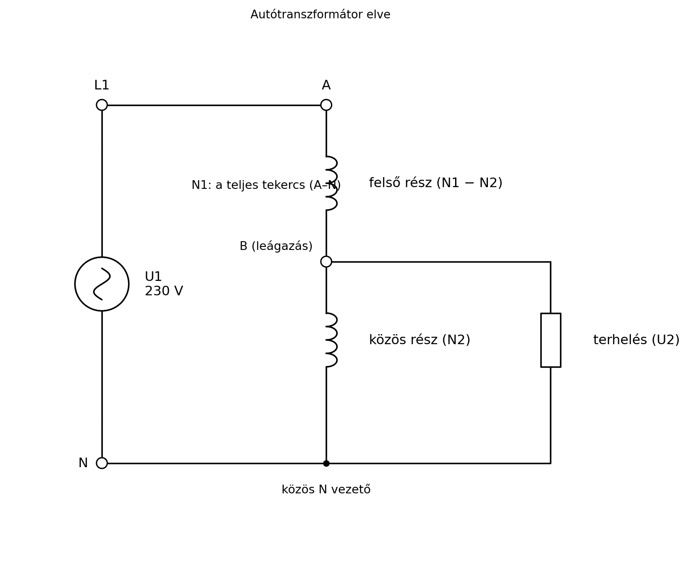
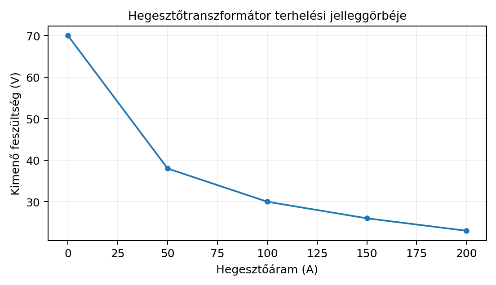

A Háromfázisú transzformátor és kapcsolási csoportok alfejezetben megismerted a háromfázisú transzformátorok működését, tekercselési kapcsolásait és kapcsolási csoportjait. A szerelői gyakorlatban viszont sokszor nem „nagy” erőátviteli transzformátorral, hanem speciális kivitelű készülékekkel találkozol: csengőtranszformátorral, hegesztőgéppel, vezérlőtranszformátorral, mérőváltókkal vagy egy transzformátorállomás olajhűtésű gépével. Ebben az alfejezetben ezeket a kiviteleket, az áram- és feszültségváltók sajátos veszélyeit, valamint az olajtranszformátorok védelmét és telepítését tanulod meg.
Az autótranszformátor olyan transzformátor, amelyben a primer és a szekunder oldal nem galvanikusan elválasztott, hanem egyetlen közös tekercsen osztozik. A feszültségváltoztatást a tekercs leágazása adja.

Definíció. Az autótranszformátor egyetlen tekercseléssel rendelkező transzformátor, amelyben a primer és szekunder kör közös tekercsrészen osztozik. A feszültségáttétel közelítőleg a menetszámok arányával egyezik meg, azaz .
Előnye, hogy kisebb, könnyebb és olcsóbb, mint az azonos teljesítményű kéttekercses transzformátor. Hátránya, hogy a primer és szekunder kör nincs galvanikusan elválasztva, így hálózati feszültségű körben érintésvédelmi szempontból nem ad védőelválasztást. A gyakorlatban autótranszformátort használnak például régi típusú feszültségszabályozókban, indítóberendezésekben vagy szünetmentes tápegységek egyes fokozataiban.
A hegesztőtranszformátor ívhegesztéshez készült, jellemzően lefelé hajló terhelési karakterisztikával. Bekapcsoláskor nagyobb üresjárati feszültség (55–80 V) biztosítja a gyújtást, majd az ív meggyújtása után a feszültség 20–30 V-ra esik le, miközben a hegesztőáram 80–200 A vagy több is lehet.
Szabály. A hegesztőtranszformátort soha ne használd olyan feladatra, ahol a kimenő feszültségnek állandónak kell lennie, mert karakterisztikája szándékosan lágy, azaz a terhelőáram növekedésével a feszültség csökken.
A hegesztőgép primer oldalát általában a műhely elosztójából, külön védőelemmel látják el. A szekunder kört rövid, nagy keresztmetszetű hajlékony kábelekkel, speciális hegesztőfogóval és testkábellel kötik. A testkábel csatlakoztatását a munkadarabhoz mindig közvetlenül, tiszta felületre kell elvégezni.

Definíció. A biztonsági transzformátor olyan leválasztó transzformátor, amelynek névleges kimenő feszültsége legfeljebb 50 V váltakozó feszültség, és a primer–szekunder tekercsek között kettős vagy megerősített szigetelés van (MSZ EN 61558-2-6; ellenőrizendő: aktuális kiadás). A SELV vagy PELV áramkör tipikus forrása; a szabvány ezen kívül akkumulátort, a hálózattól független forrást és megfelelő szabványú (SELV-minősítésű) elektronikus tápegységet is elfogad (MSZ HD 60364-4-41; ellenőrizendő: pontos szakasz). Az 50 V-os határ a névleges, üresjárásban is betartandó érték (ellenőrizendő: szabvány). A kimenetét törpefeszültségű áramkörök (SELV vagy PELV) táplálására használják.
Gyakori kivitel: 230 V / 12 V vagy 24 V, 20–200 VA, csengőhöz, LED világításhoz, fürdőszobai tükörvilágításhoz, kaputelefonhoz. A szekunder oldalon nem jelenik meg hálózati feszültség, ezért az ilyen áramkör sokkal kisebb áramütési kockázatot jelent. A csatlakozókapcsokon azonban ügyelj arra, hogy a primer oldal 230 V-os kapcsait ne cseréld fel a 12 V-os kimenettel.
Szabvány. A biztonsági transzformátorok követelményeit az MSZ EN 61558 sorozat tárgyalja (ellenőrizendő: aktuális szabványkiadás). A gyártói adatlapon fel kell tüntetni a maximális kimenő feszültséget, a teljesítményt és a szigetelési osztályt.
Feladat (B), megoldással. 24 V, 48 W fogyasztó, egyszeres hossz 8 m, 1,5 mm² réz (): ; , azaz 1,6 %.
A kistranszformátor adattábláján jelölés mutatja, mit visel el a készülék a szekunder zárlatnál (ellenőrizendő: MSZ EN 61558-1 jelölései és a fogalmak pontos magyar neve). A jelek jellemzően a transzformátor kettős körös jelében vagy mellette álló kiegészítő elemek; a pontos alakot az adattábla és a szabvány adja meg.
| Kategória | Mit jelent; a jelölés | Szerelői teendő |
|---|---|---|
| rövidzárásbiztos | zárlatban sem melegszik a határ fölé: belső impedanciája (inherens) vagy beépített védelme (nem inherens) korlátoz; a transzformátor jele rövidzárásbiztos jelöléssel | a vezetéket ettől még védeni kell, ha a terhelhetősége indokolja |
| feltételesen rövidzárásbiztos | csak a gyártó által előírt külső védelemmel biztonságos; a jel mellett a biztosító adata | pontosan az előírt típusú és értékű biztosítót építsd be |
| nem rövidzárásbiztos | külső védelem nélkül nem üzemeltethető; a jel „nem rövidzárásbiztos” jelölésű | a védelem méretezése és beépítése kötelező a gyártói adat szerint |
| hibabiztos (fail-safe) | túlterheléskor véglegesen, de veszélytelenül megszakad; F betűs jelölés | meghibásodás után cserélni kell, nem javítani; keresd meg az okot |
Szabály. A primer védelem a tápvezetéket és a transzformátort zárlat ellen védi, és el kell viselnie a bekapcsolási áramlökést (C vagy K jelleggörbéjű kismegszakító, illetve lomha biztosító a gyártói táblázat szerint). A szekunder védelem a szekunder vezetéket és a transzformátort túlterhelés ellen védi, értéke a szekunder névleges áramhoz igazodik (gyártói táblázat).
A választó- vagy leválasztó transzformátor áttétele általában 1:1, azaz kimenő feszültsége megegyezik a bemenővel, de a szekunder oldal galvanikusan el van választva a hálózattól. A cél a védőelválasztás: ha a szekunder körben egy testzárlat alakul ki, a primer hálózat földelt pontja és a szekunder kör között nincs vezető kapcsolat, ezért a hibafeszültség nem zárul áramkörré. Ilyen táplálást például kéziszerszámoknál, szűk, vezetőképes környezetben (kazán, tartály) végzett munkánál vagy javítóműhelyi mérőhelyen használnak. (Az orvosi helyiségek leválasztó transzformátoros táplálása más rendszer: orvosi IT-hálózat szigetelésfigyelővel, több fogyasztóval; ez nem védőelválasztás – ellenőrizendő: MSZ HD 60364-7-710.)
Szabály. Védőelválasztásnál a szekunder kör egyetlen pontját sem szabad földelni vagy védővezetőhöz kötni; egy leválasztó transzformátorról lehetőleg egyetlen készüléket táplálj. Több készülék csak akkor csatlakozhat, ha testeiket földeletlen, szigetelt egyenpotenciálú vezető köti össze, és a további feltételek teljesülnek (MSZ HD 60364-4-41, védőelválasztás; ellenőrizendő: pontos szakasz). A szekunder vezeték legyen rövid és ellenőrizhető, mert egy második szigetelési hiba már veszélyes érintési feszültséget okozhat.
A gyújtótranszformátor nagyon nagy feszültséget állít elő kis teljesítménnyel, hogy szikrát gyújtson: gázégőben, olajégőben, szikraköznél. A kimenő feszültség 7–15 kV lehet, árama néhány milliamper. Mivel a kimenet nagyfeszültségű, műszerrel nem szabad közvetlenül mérni; a hibakeresés csakis gyártói dokumentáció alapján, szakképzett személlyel és az előírt biztonsági szabályokkal történhet.
A mérőváltók feladata, hogy a nagy áramú vagy nagy feszültségű hálózati mennyiséget a mérőműszerek és védelmi relék számára kezelhető, kis értékre alakítsák át, ugyanakkor galvanikus leválasztást is biztosítsanak. Az áramváltó az áramot, a feszültségváltó a feszültséget alakítja át.
Definíció. Az áramváltó olyan mérőváltó, amelynek primer tekercse sorosan csatlakozik a mérendő áramú vezetékbe, szekunder tekercse pedig zárt áramkörre (mérőműszerre, relére vagy rövidzárra) kapcsolódik. Névleges szekunder árama Magyarországon jellemzően 1 A vagy 5 A.
Az áramváltó menetszám-áttétele úgy működik, hogy a primer menetszám kicsi, a szekunder menetszám nagy. Ideális esetben:
ahol az áramváltó névleges áttétele, például .
A gyakorlati áramváltókon a névleges adatok felirata például: „100/5 A 5 VA 0,5 osztály”.
Figyelem. Áramváltó üzem közben a szekunder oldalát soha nem szabad megszakítani! Ha a szekunder kör nyitott marad, a primer áram a vasmagot erősen telítésbe viszi, a szekunder kapcsokon veszélyesen nagy feszültség (akár több kV) indukálódik, és a vas is túlmelegedhet. Ezért az áramváltó szekunderét, ha nincs rácsatlakoztatott műszer, rövidre kell zárni, vagy erre szolgáló rövidzáró kapcsolóval kell felszerelni.
A rajzon a primer (P1–P2) a fővezetőbe sorosan kapcsolódik, a szekunder kör (S1–S2) ettől galvanikusan elválasztott. A Q2 rövidzáró kapcsoló a műszerrel párhuzamosan, közvetlenül az S1 és S2 kapcsok között van: a műszer levétele előtt Q2-t zárjuk, így a szekunder kör soha nem szakad meg. Az S2 kapocs földelt.
A gyakorlatban a Q2 szerepét gyakran egy áramváltó-vizsgálókapocs (bontható és rövidre zárható sorkapocs) tölti be. A műszer cseréjének sorrendjét a következő képsor mutatja: (1) mérés közben a szekunder áram a műszeren folyik; (2) először a rövidzáró hidat tesszük be S1 és S2 közé; (3) csak ezután nyitjuk a bontót, és a műszer leválasztható; a (4) kép a hibás sorrendet mutatja, amikor híd nélkül bontanak.
Visszaszereléskor a sorrend fordított: előbb a bontót zárjuk, és csak utána vesszük ki a hidat. Az ilyen munkát jogosult személy végzi, lehetőleg a primer kör feszültségmentesítése után. A HTML-kiadásban a négy lépés egymás után lejátszható.
Szabvány. Az áramváltók és feszültségváltók követelményeit, pontossági osztályait a mérőváltókra vonatkozó MSZ EN 61869 sorozat tartalmazza (ellenőrizendő: pontos szabványhivatkozás). A védőföldelést a szekunder kapocsra általában az S2-re kell kötni, a gyártói rajz szerint.
Definíció. A feszültségváltó olyan mérőváltó, amelynek primer tekercse párhuzamosan csatlakozik a mérendő feszültségre, szekunder tekercse pedig nagy impedanciájú, közel üresjárásban működő terhelésre (voltmérő, védelmi relé). Névleges szekunder feszültsége 100 V vagy .
A feszültségváltó áttétele:
Például egy 10 kV / 100 V-os feszültségváltó áttétele 100.
Figyelem. A feszültségváltó szekunder oldalát sem szabad rövidre zárni, mert a nagy szekunder áram a kis tekercsellenálláson keresztül gyorsan tönkreteszi a tekercset, és veszélyes hő keletkezhet. A szekunder kör egyik pontját általában földelni kell, így a szekunder áramkör a nagyfeszültségtől leválasztott, földpotenciálhoz rögzített áramkör lesz.
A két mérőváltó kivitelét és kapcsait a következő ábra mutatja. A kisfeszültségű elosztókban leggyakoribb átfűzős (ablakos) áramváltónál (a) maga a ház ablakán átvezetett kábel vagy sín a primer (egyetlen menet); a házon a P1 jelölés (nyíllal) mutatja, hogy melyik oldal nézzen a betáplálás felé, felül vannak az S1, S2 szekunder kapcsok, az adattáblán az áttétel, a terhelhetőség (VA) és a pontossági osztály. A (b) rész az elvet mutatja: egy primer menet, sok szekunder menet a gyűrűmagon. A feszültségváltó (c) primer kapcsai A és N, szekunder kapcsai a és n, a testén földelő kapocs van.
Beépítéskor a P1 irány a leggyakoribb hiba: fordított áramváltóval a fogyasztásmérő vagy a teljesítménymérő negatív irányt (látszólagos visszatáplálást) mutat, háromfázisú mérésnél pedig hibás összeget. Az ábra alján összefoglalt két szabály – az áramváltó szekunderét nem szabad nyitni, a feszültségváltóét nem szabad rövidre zárni – a két készülék működéséből következik. A HTML-kiadásban a részek rámutatásra magyarázatot kapnak.
A nagyobb teljesítményű elosztótranszformátorok (például 50–1600 kVA) gyakran olajszigetelésű és olajhűtésű kivitelben készülnek. A transzformátor aktív része (vasmag és tekercsek) fémtartályban, ásványi vagy növényi alapú szigetelőolajban helyezkedik el. Az olaj kettős szerepet lát el: szigetel és elvezeti a hőt.
A hűtés módja szerint megkülönböztetjük:
A tartály felületét gyakran bordákkal vagy radiátorokkal növelik. A felső és alsó hőmérséklet-különbség természetes keringést indít el, ezért a meleg olaj felfelé száll, a hűtőbordán lehűl, majd alul visszaáramlik a tekercsekhez.
Egy konzervátoros olajtranszformátor részeit a következő ábra számozza. A tartály (1) bordái (2) hűtenek; a fedélen a KÖF- (3) és KIF-átvezetők (4) és a megcsapolás-átkapcsoló (10) vannak. Az olaj hőtágulását a magasan elhelyezett konzervátor (5) veszi fel, így a tartály mindig tele van; a kettőt összekötő csőben ül a Buchholz-relé (6). A konzervátor olajszintjét az olajszintjelző (7) mutatja, a „lélegző” levegő a szilikagéles légszárítón (8) át jut be. A hőmérő (9) kontaktusai jeleznek és kioldanak, a leeresztő/mintavevő szelepen (11) vesznek olajmintát, a tartály a földelőcsavaron (12) át csatlakozik az állomás földelőhálózatához.
Szemrevételezéskor ezeket a pontokat érdemes sorra venni: olajszivárgás a tartályon, a szelepeken és az átvezetőknél; olajszint a jelzőn; a légszárító szilikagéljének színe (elszíneződött töltetet cserélni kell, a színváltás jelentése a gyártótól függ); a hőmérő mutatója és húzómutatója. Kisebb, hermetikusan zárt (konzervátor nélküli) transzformátoroknál a Buchholz-relé helyett a gyártó saját védelmi egysége lehet. A HTML-kiadásban a számozott részek rámutatásra magyarázatot kapnak.
A hűtési kód négy betűjét (a módokat a hűtési módok korábbi ábrája rajzban mutatja) így olvasd: 1. betű a belső hűtőközeg (O = ásványolaj), 2. betű annak keringése (N = természetes, F = kényszerített, D = kényszerített és a tekercsbe irányított), 3. betű a külső hűtőközeg (A = levegő), 4. betű annak áramlása (N/F) (ellenőrizendő: MSZ EN 60076-2).
| Kód | Belső közeg és keringése | Külső közeg és áramlása | Mi kell az adattábla szerinti teljesítményhez | Szerelői ellenőrzési pont |
|---|---|---|---|---|
| ONAN | olaj, természetes | levegő, természetes | szabad légáramlás a bordák/radiátorok körül | radiátorok tisztasága, a helyiség szellőzése, nincs eltorlaszolva |
| ONAF | olaj, természetes | levegő, kényszerített (ventilátor) | működő ventilátorok (álló ventilátorral csak az ONAN-teljesítmény vehető le) | ventilátorok tápellátása és védelme, hőmérő-kontaktusos indítása, forgásirány |
| OFAF | olaj, kényszerített (szivattyú) | levegő, kényszerített | működő olajszivattyú és ventilátorok | szivattyú tápellátása és áramlásjelzője, ventilátorok, a jelzések bekötése |
| ODAF | olaj, kényszerített és a tekercsekbe irányított | levegő, kényszerített | mint az OFAF, irányított olajárammal (nagy egységeknél) | mint az OFAF, az áramlásjelző riasztása a vezénylőben |
Buchholz-relé. Az olajtöltetű transzformátor tartálya és a konzervátor (olajtágulási tartály) közé gázrelé, ún. Buchholz-relé van beépítve. A belső szigetelési hiba (szikrázás, ívképződés) során az olaj elbomlik, gáz képződik. A gázbuborék a relébe jutva először a felső úszót megbillenti, ami riasztást ad; ha a hiba nagyívű, akkor az olajáramlás hirtelen meglökésre az alsó úszót (csappantyút) is átbillenti, ami azonnali kikapcsolást vált ki.
A Buchholz-relé két fokozatú: „riasztás” (gázgyűlés) és „kioldás” (erős olajáramlás). A riasztásnál a transzformátort ellenőrizni kell, mintát venni az olajból, és gázanalízist végezni. A kioldásnál a transzformátort nem szabad visszakapcsolni alapos vizsgálat nélkül.
A relé működését a következő három kép mutatja: (1) normál üzemben a ház tele van olajjal, mindkét érintkező nyitott; (2) lassú gázfejlődésnél a gáz a ház tetején gyűlik, kiszorítja az olajat, a felső úszó lesüllyed – riasztás; (3) belső ívnél az olaj hirtelen a konzervátor felé lökődik, és kibillenti az alsó csappantyút – kioldás. A fedélen a gázvételi szelep és a próbanyomó látható.
A gázvételi szelepen vett mintából a gáz összetétele és mennyisége utal a hiba jellegére; a próbanyomóval üzembe helyezéskor és időszakosan ellenőrzik a működést. A HTML-kiadásban a három állapot egymás után lejátszható.
Hőmérséklet-védelem. Az olaj hőmérsékletét a tartályba épített hőmérővel jelzik, gyakran kontaktusokkal: előbb jelzés (pl. 80 °C), majd kioldás (pl. 95 °C) – az értékeket mindig a gyártói útmutató határozza meg, ezért jelölésük szükséges. A tekercshőmérséklet-mérő az olajhőmérséklethez hozzáad egy, a tekercsárammal arányos hőmérséklet-különbözetet, így a valós tekercshőmérsékletet becsüli.
Egyéb védelmek. Az elosztótranszformátor primer oldalát túláramvédelem, gyakran olvadóbiztosító vagy motoros hajtású megszakító védi. A szekunder oldalon kismegszakítók vagy megszakítók adják a túlterhelés- és zárlatvédelmet. Nagyobb egységeknél differenciálvédelem, túlnyomás-védelem, olajszint-ellenőrzés is előfordul. A védelmeket a hálózati engedélyes előírásai és az MSZ EN 60076 sorozat szerint alakítják ki (ellenőrizendő: aktuális kiadás).
Szabvány. Az erőátviteli transzformátorokra vonatkozó általános követelményeket az MSZ EN 60076 sorozat tárgyalja. A villamos berendezés telepítésénél az MSZ HD 60364 és a hálózati engedélyes csatlakozási feltételei az irányadók (ellenőrizendő: pontos hivatkozások).
Az olajtranszformátorokat általában transzformátorállomásba szerelik. A telepítés során be kell tartani a gyártói utasításokat és a helyi előírásokat.
Szabály. A transzformátor környezetét úgy kell kialakítani, hogy a keletkező hőt el tudja vezetni, a szivárgó olaj ne szennyezze a talajt, és tűz esetén a láng ne terjedhessen át a szomszédos épületekre. Ezt a telepítési helyszín típusa (beltéri, kültéri) és a környezet szerint kell méretezni (ellenőrizendő: aktuális tűzvédelmi és környezetvédelmi előírások).
A beltéri transzformátorhelyiségnél különös figyelmet kell fordítani a szellőzésre. A természetes szellőzés alsó és felső nyílásokkal biztosítható; a méretezést a hőveszteség, a helyiség térfogata és a megengedett belső hőmérséklet alapján számítják. Kültéri állomásnál a burkolat, a kerítés és a tűztávolság a meghatározó.
Az üzembe helyezés előtt ellenőrizni kell:
A karbantartás időszakos feladatai: olajminta-vétel (szigetelési szilárdság, víztartalom, gázanalízis), szigetelési ellenállás mérés, csatlakozók húzása, elszíneződés és szivárgás keresése, a hűtőfelület tisztítása, a védelmek működési próbája.
Egy középfeszültségű/kisfeszültségű (KÖF/KIF) transzformátorállomásban az olajtranszformátor primer oldala 10 kV-os középfeszültségű hálózathoz csatlakozik, szekunder oldala a 230/400 V-os kisfeszültségű elosztót táplálja. Az állomásban a szerelő azt tapasztalja, hogy a Buchholz-relé riasztást adott, de a transzformátor még üzemel. A szakszemélyzet olajmintát vesz, és a gázanalízis arra utal, hogy a tekercsszigetelés (papír-olaj) helyi túlmelegedést szenvedett; valószínűleg egy laza csatlakozás vagy a hűtés nem megfelelő. A szakszemélyzet a transzformátort kiveszi az üzemből, megismétli az olaj-gázanalízist (trend), megméri a tekercsellenállásokat és a szigetelési ellenállást; a laza belső csatlakozás vagy a túlmelegedés okát a gyártó bevonásával tárják fel, és csak a hiba megszüntetése és a vizsgálatok megfelelő eredménye után helyezik újra üzembe. A hiba tanulsága: a gázrelé riasztása nem „csak egy jelzés”, hanem a belső bomlási folyamat korai jele, amelyet mindig komolyan kell venni.
Biztonsági korlát. A fenti műveletek hálózati feszültségű és középfeszültségű környezetben történtek; ilyen munkát csak jogosult, a hálózati engedélyes által felhatalmazott szakszemélyzet végezhet, a feszültségmentesítés öt szabályával.
Gyakorlás: ennek az alfejezetnek a kidolgozott példái, gyakorlatai és megoldással ellátott feladatai az Összefoglaló feladatgyűjtemény villanyszerelő tanulóknak című kötet 25.4 szakaszában találhatók.
A speciális transzformátorok közül az autótranszformátor egyetlen tekercset használ, emiatt nincs galvanikus leválasztása; a hegesztőtranszformátor lágy, lehajló karakterisztikát ad; a biztonsági transzformátor ≤50 V kimenő feszültséggel táplál SELV/PELV köröket; a választótranszformátor 1:1 áttétellel védőelválasztást biztosít; a gyújtótranszformátor nagyfeszültségű szikrát állít elő. Az áramváltó primer oldala soros, szekunder oldala zártan üzemel; az áttétel , a szekunder szakadása tilos, mert nagy feszültséget indukál. A feszültségváltó primer oldala párhuzamos, szekunder oldala közel üresjárásban működik, rövidzárása tilos. Az olajtranszformátorok hűtése ONAN, ONAF vagy OFAF módú lehet. Védelmükben a Buchholz-relé kiemelt szerepet kap: a gázgyülem riasztást, az erős olajáramlás kioldást vált ki. A telepítésnél a szellőzést, a tűztávolságot és az olajfelfogást az előírások szerint kell kialakítani. Az üzembe helyezéskor és karbantartáskor ellenőrizni kell a szigetelést, az olaj állapotát, a védelmek működését és a földelést. Minden munkánál be kell tartani a feszültségmentesítés öt biztonsági szabályát, és hálózati feszültségű beavatkozást csak jogosult személy végezhet.
A fejezetben hivatkozott szabványok: MSZ EN 61558 (transzformátorok biztonsága), MSZ EN 61869 (mérőváltók), MSZ EN 60076 (erőátviteli transzformátorok), MSZ HD 60364 (kisfeszültségű villamos berendezések). A pontos szabványszámok, szakaszok, hőmérsékleti határértékek és a hűtési módok besorolása a hatályos kiadások szerint ellenőrizendők. A megadott példák értékei tanulási célúak, éles telepítésnél a gyártói adatlap és a hatályos előírások a mérvadók.